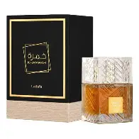

El crecimiento del mercado de perfumes árabes en Argentina
El interés por los perfumes árabes en Argentina creció de manera exponencial durante los últimos años. Lo que comenzó como una tendencia de nicho entre fanáticos de la perfumería se transformó en un fenómeno masivo impulsado por redes sociales, tiendas online y nuevas importadoras locales. Hoy, estas fragancias son una alternativa real y competitiva frente a las marcas europeas tradicionales.

¿Por qué crecieron tanto en Argentina?
Existen varios factores que explican el auge, pero tres destacan por encima del resto:
- Precio accesible: los perfumes árabes cuestan una fracción de lo que vale un perfume europeo, ofreciendo mejor rendimiento por el mismo precio.
- Larga duración: muchas fragancias superan las 10 o 12 horas en piel, y días enteros en ropa.
- Viralidad en redes: TikTok, Instagram y YouTube popularizaron marcas como Lattafa y Swiss Arabian, impulsando compras impulsivas.
Además, la economía argentina hizo que muchos consumidores buscaran opciones más accesibles pero igual de potentes, lo cual abrió la puerta al mercado árabe.
Las marcas más vendidas en el país
Actualmente, estas son las marcas árabes con mayor presencia en el país:
- Lattafa — la favorita en ventas y la más viral.
- Swiss Arabian — muy elegantes y con excelente duración.
- Ard Al Zaafaran — económicos y muy recomendados para empezar.
- Rasasi — fragancias intensas, perfectas para fanáticos del oud.
- Arabian Oud — la marca premium más presente en el país.

¿Dónde se consiguen?
La disponibilidad actual es mucho mayor que años atrás. Hoy se pueden comprar en:
- Perfumerías especializadas en productos importados.
- Importadores privados que traen perfumes por pedido.
- Marketplace (Mercado Libre) donde se venden miles de unidades por mes.
- Emprendedores de Instagram que ofrecen envíos a todo el país.
- Tiendas online con stock permanente y métodos de pago locales.
Precios en Argentina (2025)
Los precios varían según la marca, la disponibilidad y la demanda. A modo orientativo:
- Lattafa: $25.000 – $45.000
- Swiss Arabian: $35.000 – $60.000
- Rasasi: $40.000 – $75.000
- Arabian Oud: $80.000 – $150.000
Incluso con la inflación local, estas fragancias siguen siendo más accesibles que muchas marcas de diseñador, lo que las vuelve aún más atractivas.
Tendencias del mercado argentino
Los consumidores argentinos muestran un interés creciente por aromas intensos, cálidos y con buena proyección. También se observa un aumento en las compras de fragancias “invernales”, como las especiadas y ambaradas, así como una preferencia por perfumes comparados con marcas de diseñador.
La influencia de reseñadores en TikTok y YouTube también moldea las tendencias locales: modelos como Khamrah, Oud for Glory y Velvet Oud se mantienen entre los más buscados.
Conclusión
El mercado argentino está atravesando una expansión sostenida. Los perfumes árabes pasaron de ser un producto desconocido a convertirse en una tendencia masiva, impulsada por redes sociales, precios competitivos y fragancias intensas que se adaptan al gusto local. Todo indica que su popularidad seguirá creciendo en los próximos años.
← Volver a publicaciones